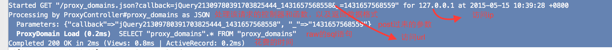

rails 对于每一次请求，记录了下列信息:

rails是如何来实现它的呢？我们自己写的controller里并没有一行代码和它有关。
通过在rails源码目录中，grep Started * -r, 最终定位到railties/lib/rails/rack/logger.rb
# Started GET "/session/new" for 127.0.0.1 at 2012-09-26 14:51:42 -0700
def started_request_message(request)
'Started %s "%s" for %s at %s' % [
request.request_method,
request.filtered_path,
request.ip,
Time.now.to_default_s ]
end
started_request_message这个函数，在每个request进来后，都会进行处理.
通过在rails源码目录中，grep "Processing by" * -r, 最终定位到actionpack/lib/action_controller/log_subscriber.rb
def start_processing(event)
return unless logger.info?
payload = event.payload
params = payload[:params].except(*INTERNAL_PARAMS)
format = payload[:format]
format = format.to_s.upcase if format.is_a?(Symbol)
info ""Processing by" #{payload[:controller]}##{payload[:action]} as #{format}"
info " Parameters: #{params.inspect}" unless params.empty?
end
def process_action(event)
info do
payload = event.payload
additions = ActionController::Base.log_process_action(payload)
status = payload[:status]
if status.nil? && payload[:exception].present?
exception_class_name = payload[:exception].first
status = ActionDispatch::ExceptionWrapper.status_code_for_exception(exception_class_name)
end
message = "Completed #{status} #{Rack::Utils::HTTP_STATUS_CODES[status]} in #{event.duration.round}ms"
message << " (#{additions.join(" | ")})" unless additions.blank?
message
end
end
start_processing和process_action函数在收到相应event后都被触发，从而打印了这段日志:
Processing by ProxyController#proxy_domains as JSON
Parameters: {"callback"=>"jQuery21309780391703825444_1431657568558", "_"=>"1431657568559"}
Completed 200 OK in 53ms (Views: 11.7ms | ActiveRecord: 1.5ms)
sql语句的输出，在哪呢？activerecord/lib/active_record/log_subscriber.rb
def sql(event)
return unless logger.debug?
self.class.runtime += event.duration
payload = event.payload
return if IGNORE_PAYLOAD_NAMES.include?(payload[:name])
name = "#{payload[:name]} (#{event.duration.round(1)}ms)"
sql = payload[:sql]
binds = nil
unless (payload[:binds] || []).empty?
binds = " " + payload[:binds].map { |attr| render_bind(attr) }.inspect
end
if odd?
name = color(name, CYAN, true)
sql = color(sql, nil, true)
else
name = color(name, MAGENTA, true)
end
debug " #{name} #{sql}#{binds}"
end
railties/lib/rails/rack/logger.rb和actionpack/lib/action_controller/log_subscriber.rb, activerecord/lib/active_record/log_subscriber.rb是怎样被使用到的？ 最后的两个log_subscriber.rb都执行了attach_to函数，使得通过event分别和active_controller, active_record绑定了
ActionController::LogSubscriber.attach_to :action_controller
ActiveRecord::LogSubscriber.attach_to :active_record
lograge, 方便的允许你去修改rails默认的logging输出, 如改成单行，方便grep，方便zabbix等收集信息
how-to-log-specific-request-details-to-rails-server-logs, stackoverflow上，关于怎样输出更多信息，如useragent等的信息到日志中的问题
on-notifications-logsubscribers-and-bringing-sanity-to-rails-logging, 介绍了rails的logger机制
LogSubscriberLogSubscriber的api文档